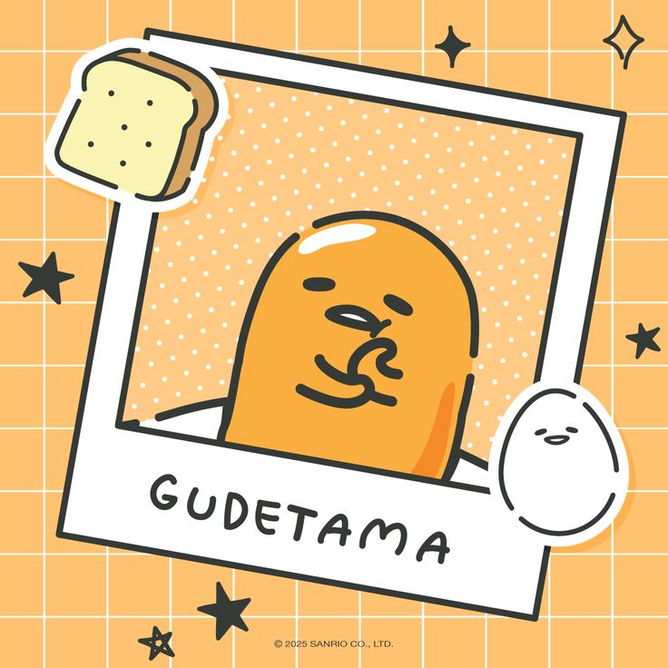

Pompompurin
El top global de sanrio actual campeon del ranking de popularidad oficla.

Badtz-Maru
Un pingüino con actitud rebelde pero con un buen corazón.

Gudetama
Un huevito muy perezoso que solo quiere seguir durmiendo.
Pase el mouse para que vean la funcionalidad de mi hover muejeje